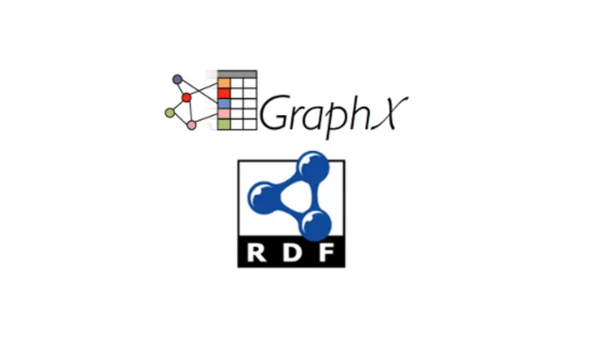

7.1 知识图谱建模与存储
知识图谱建模与存储
学习目标
- 了解知识图谱的相关数据模型.
- 理解知识图谱的主流物理存储方法和原理.
- 知识图谱数据应用的前提是, 这些数据的有效表示与存储. 逻辑层面的表示(即数据模型)是从人的角度对知识图谱数据进行描述, 物理层面的存储时从计算机的角度对数据进行组织, 两者密切相关.
知识图谱的数据模型

三元组模型
- 这是我们最为熟悉的模型, 比如经典例子, ("柏拉图", "出生地", "雅典"), 将两个实体和他们之间的关系共同组成一个三元组. 因此一个知识图谱数据集可以看做是一个三元组的集合.
- 除了上述我们最为熟悉的三元组模式, 在知识图谱的实际应用中, 常常还需要表达一些相对复杂的语义, 包括多元关系, 时空知识, 多模态知识以及对象知识等.
- 例如: 我们向三元组("亚里士多德", "导师", "柏拉图")中添加时空线索信息, 则变成了五元组的形式("亚里士多德", "导师", "柏拉图", "(北纬38°02′, 东经23°44′)", "公元前407年").
- 例如: 我们向三元组("柏拉图", "出生地", "雅典")中添加图片资源链接的关系信息, 则变成了四元组的形式("柏拉图", "出生地", "雅典", "http://***.com/foaf/0.1/depiction", "wikiFile:Plato_MC1355.jpg").
- 总结: 三元组模型的优点在于模型简单, 易于扩展, 使得基于这一模型构建大规模数据集成为可能. 但是三元组模型的局限性也很明显, 主要是对于所有知识都只能拆分成二元关系的组合, 难以表达复杂语义. 三元组主要表达的是事实性知识, 对于事理逻辑的表达能力有限, 难以有效支撑逻辑推理. 在实际应用中, 需要联合使用其他知识表示, 包括谓词逻辑, 并给予三元组知识开展有效的推理.
图模型
- 知识图谱更加天然的适配于图模型, 在实际应用中, 经常将三元组数据通过预先定义的语义关联转换成一个或多个连通图, 整个知识图谱就可以表示成一张巨大的"图"了.
- 主流的表达方式:
- 有向图: 工业界最常用的模式
- 百科图谱DBPedia
- 中文百科图谱CN-DBPedia
- 药品知识图谱Drugbank
- 蛋白质知识图谱UniPort
- 地理信息知识图谱LinkedGeoData
- 属性图: 图数据库工业界广泛采用的模式
- 树状图: WordNet
- 有向图: 应用面也很广
知识图谱的物理存储
- 复杂查询的优化问题是知识图谱管理系统的核心问题之一, 可以借鉴传统关系型数据库中的SQL查询的计划生成和查询优化策略. 在实际应用中, 知识图谱数据的查询运算通常呈现出如下特点:
- 选择度高: 知识图谱中常见选择操作的答案仅涉及知识图谱中很少的三元组.
- 连接数量多: 知识图谱中常见的运算经常会包含大量的连接操作.
关系表存储
- 考虑到市面上已经存在大量成熟的关系型数据库系统, 而知识图谱数据的三元组很容易映射到关系模型上. 那么基于关系表对知识图谱数据进行组织的方式可以分成四类:
- 基于三列表的存储方式
- 基于属性表的存储方式
- 基于垂直表的存储方式
- 基于全索引的存储方式
三列表存储
- 通过维护一个巨大的三元组表来管理RDF知识图谱数据, 这个三元组表包含3列, 分别对应主体, 谓词, 客体(即SPO). 当系统接收到用户输入的查询请求时, 系统将该查询转换为SQL查询. 这些SQL查询通常需要对三元组表执行多次自连接操作(self-join)以得到最终结果.
- 核心: 使用一个巨大的三元组表, 面临一个巨大的代价, 系统不论执行何种操作, 都需要进行全表扫描!!!
- 工业界的解决方案是建立多个索引, 以增加查询效率. 但因为知识图谱上的运算经常包含大量的连接操作, 而这种自连接操作, 系统需要将三列表进行复制, 然后再两个巨大的三列表上进行连接, 非常耗时.
属性表存储
- 为了减少自连接操作的次数, 很多知识图谱管理系统在单个三元组表外, 还构建了额外的属性表来管理数据, 有两大类:
- 分类属性表: 根据实体类型将三元组分类, 相同类的三元组放在同一个表中.
- 聚类属性表: 将相似的三元组聚类, 然后将每类三元组集中在一个属性表中进行管理.
三列表 (s p o)
单值属性表
/
/
/
/
主键 ---多值属性表
\
\
\
\
属性类表
- Jena: 首先维护了一个巨大的三元组表, 此外Jena还维护了三种属性表: 单值属性表, 多值属性表, 属性类表. 单值属性表是将实体中所有客体值唯一的谓词聚集起来组织而成的一个表; 多值属性表是为每一个客体值不唯一的谓词构建的只有两列的表, 分别存储主体值和客体值; 属性值表是在单值属性表的基础上增加了存储实体类型列的表.
垂直表存储
- 针对三列表和属性表连接操作效率低的问题, SW-Store提出了按照谓词分表的方法. 具体来说, 将三元组按照谓词分成不同的表, 每个表保存谓词相同的三元组, SW-Store称这种方法为垂直分割.
出生时间
主体 客体
苏格拉底 公元前469年
柏拉图 公元前427年
# ---------------------------------------
出生地
主体 客体
苏格拉底 雅典
柏拉图 雅典
# --------------------------------------
学生
主体 客体
苏格拉底 柏拉图
# --------------------------------------
代表作品
主体 客体
柏拉图 理想国
- 注意: 垂直表的一大缺点是无法很好的支持谓词是变量的查询操作! 比如, 查询"柏拉图和苏格拉底的关系", 就需要扫描所有表才能回答, 导致效率低下.
全索引存储
- 除了采用一般的关系型数据库相关技术, 还有一些系统针对知识图谱数据和运算特点提出了特定的优化技术. 为了加速知识图谱数据在运算过程中的连接运算, 将三元组中SPO的各种排列情况都枚举出来, 然后为它们一一构建索引. 主体, 谓词, 客体的排列情况共计6种, 比如针对于(s, p, o), 额外存储5个对应的三元组(s, o ,p), (p, s, o), (p, o, s), (o, s, p), (o, p, s). 这些索引内容正好对应知识图谱运算中带变量的三元组模式的各种可能.
- 按照上述方式建立的索引, 不论是基于主体来查询谓词和客体, 还是基于谓词来查询主体和客体, 抑或是基于客体来查询谓词和主体, 系统都能很快的找到相应的结果.
- 注意: 因为构建了大量索引, 所以选取满足查询条件的三元组的效率极高! 但是连接操作依然低效, 且索引维护与更新的代价高昂!
图存储
- 针对于知识图谱中的图模型表示, 很多系统设计了相应的图存储模式, 主要有两种:
- 邻接表: 每个节点(实体)对应一个列表, 列表中存储与该实体相关的信息.
- 邻接矩阵: 在计算机中维护多个(n, n)的矩阵, 其中n为知识图谱中节点的数量. 每个矩阵对应一个谓词, 每一行或每一列都对应知识图谱中的一个节点.
- 优化技巧: 在利用邻接表或邻接矩阵进行知识图谱数据管理时, 一个关键问题是如何对指数候选空间的查询操作做出有效的剪枝! 一般都采用基于位图索引的方式, 配合哈希表, 比特压损等技术, 使得查询效率非常高!
- 针对属性图模型, Neo4j公司用Java语言开发了图数据库管理系统-Neo4j, 它是一个符合ACID标准的事务型图数据库, Neo4j已经成为当前最受欢迎的图数据库管理系统之一. 在Neo4j中, 属性图中的节点, 边, 以及属性都以固定长度记录的形式分别存储在不同的文件中. 节点记录维护着指向其相邻边和属性的指针; 边记录维护着指向其相邻接点和属性的指针; 属性记录维护着指向其所对应的具体属性值.
- 核心: 因为不论节点记录, 边记录, 还是属性记录都是固定长度的, 所以Neo4j在磁盘中读取数据时可以快速计算出偏移量, 使得Neo4j的读取效率很高.
分布式存储
- 知识图谱的规模日益增长, 千亿节点规模的知识图谱已经得到应用. 为了应对这些巨大图谱给存储带来的挑战, 越来越多的分布式解决方案也在迅速发展.
- 典型的能够支撑SPARQL查询处理的云计算平台包括Hadoop, Spark等:
- Hadoop: 基于邻接表的存储
- Spark: 基于垂直表的存储
- Hadoop是最常见的存储知识图谱的云计算平台, 基于Hadoop平台的存储方式首先将知识图谱数据转换为平面文件, 然后存储在Hadoop分布式文件系统HDFS上. 例如, SHARD系统以三元组中的主体为依据划分数据, 与一个主体相关的所有三元组被聚集到一起并存储为HDFS文件中的一行.